Propostas de logo
Três direções a partir do globo/rede atual (banner + site). Split CONECT (azul) + MAX (preto). Tagline: Soluções em Tecnologia.
A · Rede Globo recomendado
Evolução direta do símbolo atual: globo wireframe com meridianos/latitudes e nós. Mais limpo, legível em 32px.
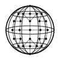
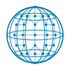
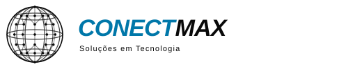
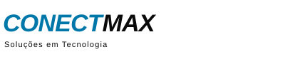
B · Malha de Nós
Círculo com rede densa de nós (conexão/tecnologia). Forte como ícone de app; um pouco mais “tech abstract”.
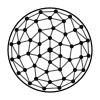
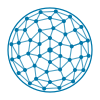
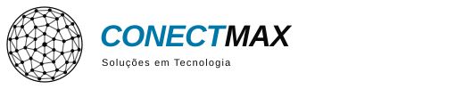

C · Órbita Hex
Globo + hexágonos (motivo do site / malha B2B) e órbitas. Mais estruturado; bom para fachada e slides.
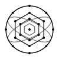
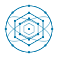
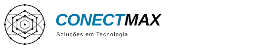

Área de respiro e usos proibidos
Regra única para as três direções.
- Respiro: margem mínima = altura do símbolo (ou 0,5× a altura do wordmark).
- Tamanho mínimo: símbolo ≥ 16px; logo completo ≥ 120px de largura.
- Split: CONECT em #0077A9, MAX em #0A0A0A (em fundos claros). Em fundo escuro/azul: tudo branco.
- Laranja #F36C00: só CTA do site — não entra no logo.
Arquivos em marca/logos/A-rede-globo/, B-malha-nos/, C-orbita-hex/ (SVG). Preferência sugerida: A · Rede Globo (continuidade com a marca atual).